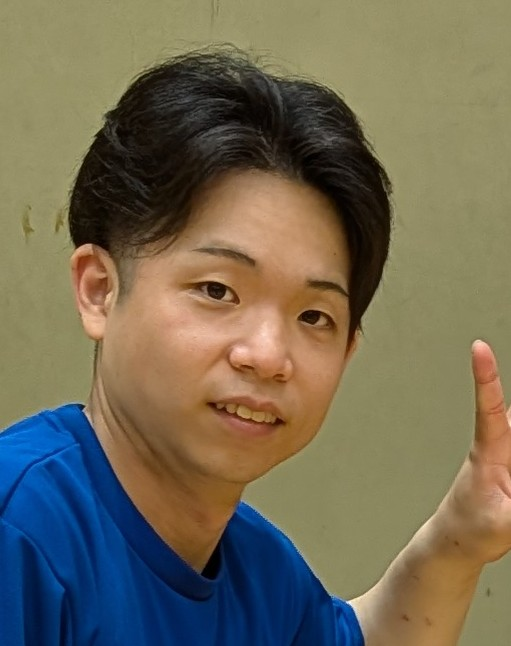
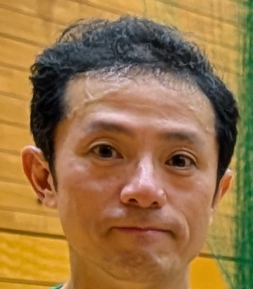
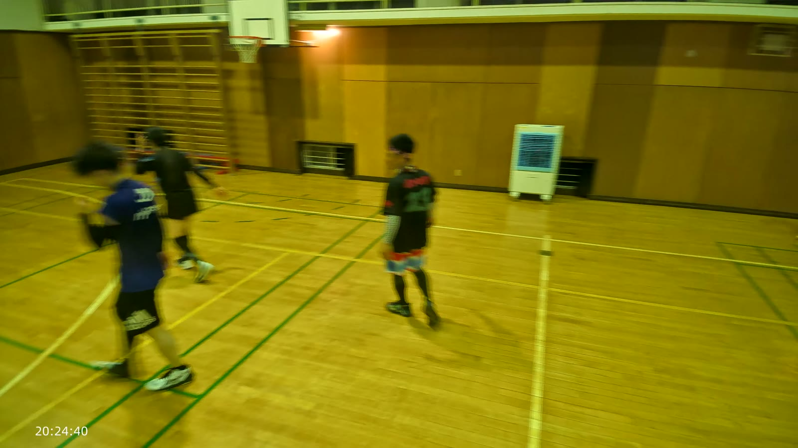

どの行も押すと、下の詳細版へ飛びます。







決め手は 31:41 のバックトスです。後ろ向きに、見ていない側にいるやっさんへ正確に上げました。やっさんはそれを相手の正面ではなく右奥の空いたスペースへ打ち込んでいます。決めたのはやっさんですが、この得点を作ったのはあきのトスの精度でした。
声も出ています。31:25、34:31、49:24、57:34 と、口を大きく開けて声を上げている場面がこの日いちばん多く残っていました。
 31:3320:33:54。白シャツの「8」があき。バックトスを上げているところ
31:3320:33:54。白シャツの「8」があき。バックトスを上げているところ
終盤のたった2秒です。高いところから落ちてくるボールにやまさんが両腕を頭上に構えて真下に入り、続けてこもりんが頭の上で三角に構えてオーバーで上げました。攻撃の形をきちんと作れた、この日でもよくそろった一連です。
このあと打ったボールは、相手コートの77番 Kaede にブロックで止められました。点は取られていますが、そこまでの運び方は良い形です。
 57:2220:59:43。やまさんが落下点の真下に入る
57:2220:59:43。やまさんが落下点の真下に入る
 57:2320:59:44。こもりんがオーバーで上げる
57:2320:59:44。こもりんがオーバーで上げる
プレーの質だけならこの日いちばんでした。アタックの決定力があり、ブロックにも毎回きちんと入っています。
それでもこの賞にしたのは、プレー以外の働きのほうが際立っていたからです。休憩中に長い柄のモップでコートを拭き、得点表示を操作し、タオルを首にかけて数人に説明し、ネットの張り具合を直す。休憩中にコートに残って動いていた唯一の人でもありました。
 36:2320:38:44。手前がやっさん、奥から寄っているのがかずお
36:2320:38:44。手前がやっさん、奥から寄っているのがかずお
34:31、かずおとあきの2人が同時に上を向いて口を開けています。この日いちばん明確な声掛けの証拠で、声を出している相方がはっきり写っているのはこの場面だけでした。
声は静止画にいちばん写りにくいものです。実際にはもっと多くの人が出していたはずで、次回は音声からも拾えるようにします。
 34:2320:36:44。青いATHLETAがかずお、白があき
34:2320:36:44。青いATHLETAがかずお、白があき
22:20、ごく普通のゲームの最中に画面がまったく別の景色に切り替わりました。体育館の反対側の壁、肋木、別のバスケットゴール。誰かがカメラごと持ち上げて運んでいたのです。その手前をやっさんがヘアバンド姿で笑いながら歩いていきました。
持ち上げた本人はカメラを持っているので写りません。犯人は今のところ不明です。
22:1920:24:40 あたり。景色が入れ替わっている右コートがレシーブ→トス→アタックと攻撃の形を作り、それを左コートの77番 Kaede がきれいにブロックして決めました。両サイドとも良いことをしていますが、最後に点を取ったのは左コート側です。
決まった直後には仲間同士で声をかけ合う姿も見えます。ネットをはさんだ両方が、それぞれの持ち味を出した5秒でした。
57:2220:59:45。左コートの Kaede がブロックで決めたところ
二枚で跳ぶこと自体は、だいたいできています。課題は相手の素早いトスに対して二枚目が間に合うかどうかです。アタッカーの正面に入る一枚目は比較的やさしく、難しいのは奥から寄ってくる二枚目のほうでした。
下の場面では、かずおが奥から寄って二枚目に入っています。ここがもう少し早く揃うと、相手の速い攻撃に対しても形になりそうです。
36:2320:38:44。手前がやっさん、奥から寄っているのがかずお
苦しい場面で高く上げて拾い切る「つなぎ」がとても多く、粘り強さがよく出ています。ここから一歩進めるなら、上げたボールをネットから少し離したトスに置き換えることです。そうすると、そのまま助走してアタックへ入れます。
下は、目指したい形のほうです。りるのバックトスがとてもきれいで、ネットから離れた位置に置けているため、打ち手が詰まらずに振り切れています。これは苦し紛れの「つなぎ」ではなく、はじめから攻撃を作りにいったトスです。
 9:3620:11:57。りるのバックトスから、詰まらずに振り切れている
9:3620:11:57。りるのバックトスから、詰まらずに振り切れている
クイックは、この日はまだ記録に残っていません。うまくやることより先に、まず一本トライすれば、それだけで記録に残ります。次の楽しみとして置いておきたいところです。
 33:2520:35:46。ボールが画面の外まで高く上がっている。この高さがそろうと、クイックの土台ができる
33:2520:35:46。ボールが画面の外まで高く上がっている。この高さがそろうと、クイックの土台ができる
この1時間を通じて、失点のあとに下を向いたり黙り込んだりしているコマが一枚もありませんでした。悔しさを出しているように見える場面はいくつかありますが(頭に両手を当てる、膝に手をついてうつむく)、いずれも直後には全員が位置に戻っており、引きずっていません。
声もよく出ています。34:31 にはかずおとあきが同時に声を上げているのが写っており、そのほかにも口を大きく開けている場面が各所に残っていました。
34:2320:36:44。2人が同時に声を上げている
得点のたびに手を合わせる習慣が、しっかり根づいています。32:27(左右のコートで同時)、33:20(左コートの4人が中央に集まって全員が笑顔)、34:34、35:55、47:17、51:08、57:06、58:16。内部練習でここまで揃うのは珍しいことです。
倒れた仲間のところへも自然と人が集まっていました(35:38、39:46)。休憩中にモップでコートを拭く人がいて、待ち時間に一人で手の形を確かめている人もいる。技術より先に、こちらのほうが外から見ていていちばん印象に残りました。
 33:1220:35:33。得点のあと、左コートの4人が中央に集まる
33:1220:35:33。得点のあと、左コートの4人が中央に集まる
過去の記録と引き比べて成長を讃える賞ですが、今回が Drop の動画としては初めての分析のため、比較対象がありません。この日の選手ごとの記録は残してあるので、次回以降で状態を比べられるようにしています。
次回を楽しみにしています。
けんぴー(AI)